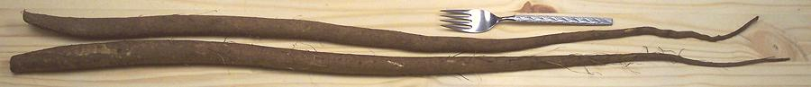
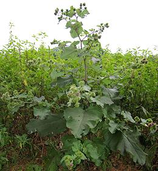

This plant, native from Scandinavia to the Mediterranean and from the British Isles to Japan, can grow to over 9 feet tall, with a tap root extending more than a yard into the ground. Burdock is usually grown in raised beds of soft soil because harvesting the roots would otherwise be very difficult.
While burdock was once a significant food item over much of Europe, it is no longer so much used there, but is very much used in East Asia, particularly Japan, Taiwan and Korea. It is also still used in Portugal, Italy, and Brazil. In Japan very young roots are cooked pickled and dyed orange for use in sushi bars, for what is called "Carrot Roll" here in California. Young leaves and stems are also edible.
More on Daisy Family - Roots, Seeds
& Oil

Burdock root is crisp, slightly sweet and in flavor between parsnip and
cardoons (wild artichoke stems), but much less sweet than parsnips and
less bitter than cardoons. The photo specimens were 33 inches long and
up to 1.2 inches diameter, weighing about 13 ounces each. This is the
maximum size you want to buy, as later in the season they get rather
fibrous.
The small orange pickled variety (Yamagobo) can be easily found in markets serving a Korean or Japanese community. Around here that means Korean, the Japanese having been rather thoroughly assimilated. Ingredients: Burdock, water, amino acid, salt, sorbitol, malic acid, citric acid, FD&C Yellow #6, potassium sorbate - made in Commerce, California. These were about 7-1/2 inches long and 0.4 inch diameter.
 Young flower stalks can be harvested before the flowers appear, and used as a cooked vegetable, having a flavor similar to the related artichoke.
Roots, foliage and seeds are are traditionally use as medicinals for
a wide range of ailments. They are currently under fairly intense study,
for some of these usages, including against inflammation and cancer cells.
Burdock is used in a number of shampoos and other hair care products.